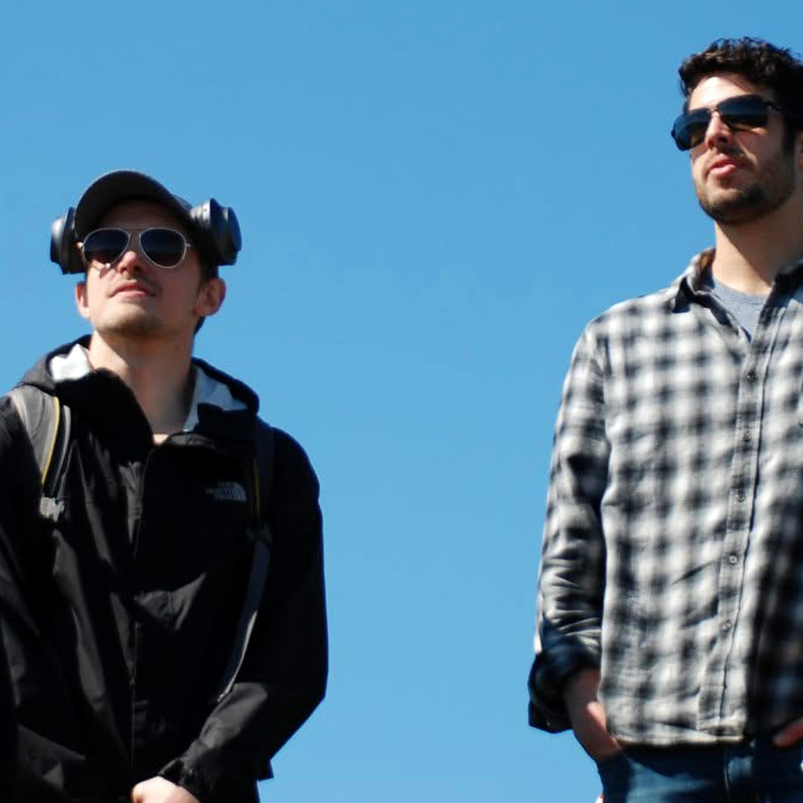
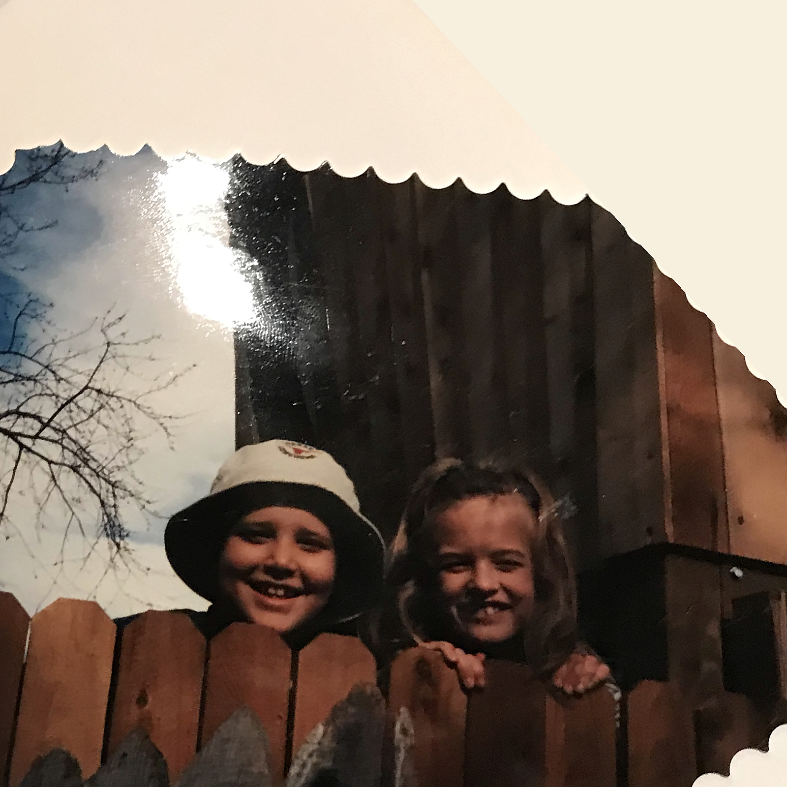
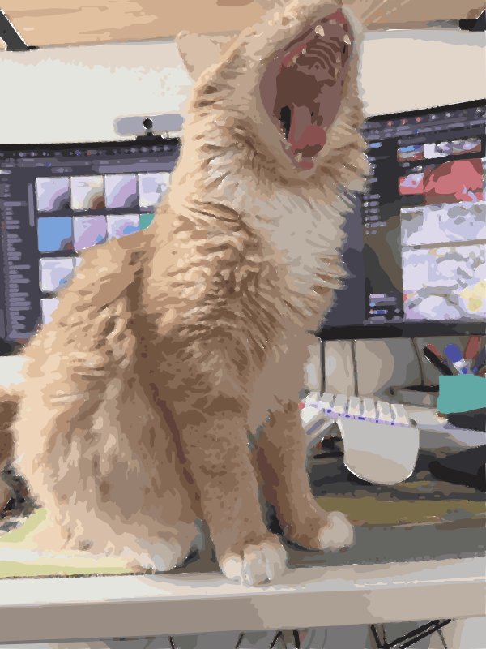

PUFFY’S DAD’S PODCAST03
Episode 03 · 43 min · Neel Shah
Life doesn’t come
with instructions.
Marriage, parents, work, coding agents, and the difficult work of knowing what you want.
A podcast by Wesley Beckner
I’m Puffy’s dad.

Pull up a chair
Friends, family, and figuring it out.
There’s a lot to talk about.
Episode 03 · 43 min · Neel Shah
Marriage, parents, work, coding agents, and the difficult work of knowing what you want.

Episode 01 · 44 min
Kids, work, AI, and the elaborate lengths we go to just to stay in touch.

Episode 02 · 44 min
Lifelong friends on parenthood, politics, and what it means to keep speaking.
 puffy + his dad, naturally.
puffy + his dad, naturally.I’m really bad at staying in touch with my friends. So I started recording our conversations.
We talk about what’s happening in our lives, what we’re thinking about, and what we’re trying to figure out. Puffy supervises.
You’re welcome to listen inNo thoughts.
Excellent company.



Real Puffy. In all his very orange glory.
Anyway.
Glad you’re here.